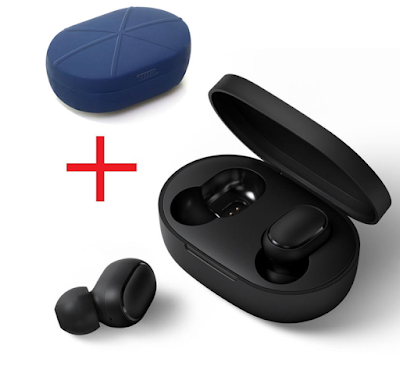

Merhabalarr :) Uzun süredir fiyat/performans ürünü bir bluetooth kulaklık arayışındaydım. Benim gibi bu arayışta olanlara yardımcı olur diye aldığım ve memnun kaldığım ürünü sizlerle de paylaşmak istedim.
Yaklaşık 1 sene boyunca JBL T450 kulak üstü kulaklığı kullanıyordum. Ses performansından gayet memnundum. Sadece kullanım kolaylığı açısından portatif ve minimal bir kulaklık daha konforlu olur diye düşündüm. Bunun için de bluetooth kulak içi kulaklıklara yöneldim.
Genellikle teknolojik bir ürün alacaksam ilk önce takip ettiğim YouTube kanalları üzerinden inceleme videolarını izlerim. Bir ay kadar önce Hardware Plus kanalı üzerinden Redmi AirDots kulaklığı keşfettim. Teknik özelliklerini paylaşmak istiyorum öncelikle.

- Aktif Gürültü Önleme: Var
- Bluetooth Versiyon: 5.0
- İletişim Mesafesi: 10 metre
- Tek Kulaklık Pil Kapasitesi: 40 mAh
- Şarj Kutusu Pil Kapasitesi: 300 mAh
- Kulaklık Şarj Süresi: 1.5 saat
- Şarj Kutusu Şarj Süresi: 2 saat
Kulaklığı 1 haftadır kullanıyorum. Yukarıda yazan özelliklerini cidden karşılıyor. Bluetooth açıldığı anda cihaza hemen bağlanıyor ve bağlantı asla kopmuyor. Müzik dinlerken de bass performansı ve maksimum ses seviyesi de bence gayet tatmin edici. 4 saat kesintisiz olarak isterseniz müzik dinleyebiliyor isterseniz de video izleyebiliyorsunuz. Sanırım tek eksisi mikrofon.. İş görüyor ama daha iyi olabilirdi.
Ürünün Evofone üzerindeki satış fiyatı şu an 200 TL, Hepsiburada üzerindeki indirimli hali ise 170 TL. Kanalın verdiği indirim koduyla Bangood üzerinden gümrük ve kargo dahil (ek olarak resimde görülen şarj kutusunun silikon kılıfını da ekledim ben) 140 TL ödedim. Bangood üzerinden yaptığım ilk alışverişti o yüzden sorun çıkar diye gerildim açıkçası. Ama gerçekten iletişim servisi ve gönderim kalitesi olarak oldukça memnun kaldım. Mesela ürünü almadan yanlışlıkla hesabımdan onayladım ve mail yoluyla servise sorunca 1 saat içerisinde detaylı bir mail dönüşü aldım. Son olarak şunu de belirteyim, tahmini teslimat tarihi gümrükte oluşabilecek aksaklıklar da düşünülerek olabilecek en geç tarih yazılmış. 2 ayda gelmesini beklediğim kulaklık 20 gün içerisinde sorunsuz olarak elime ulaştı.
Kısaca özetlemek gerekirse tam bir fiyat/performans ürünü. Böyle bir ürün arayanların bakıp incelemesini öneririm :)